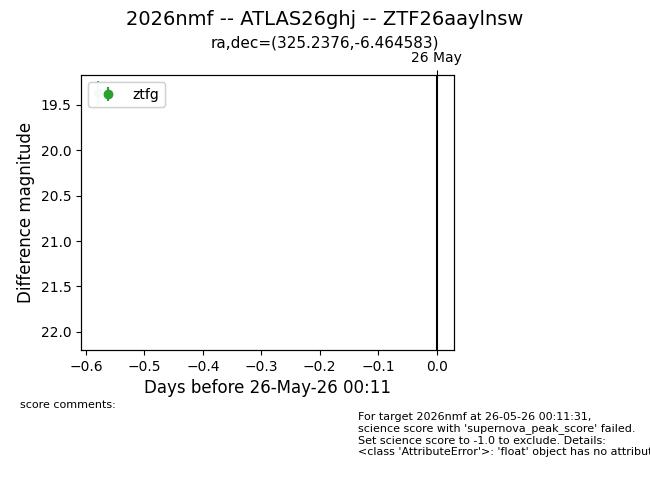
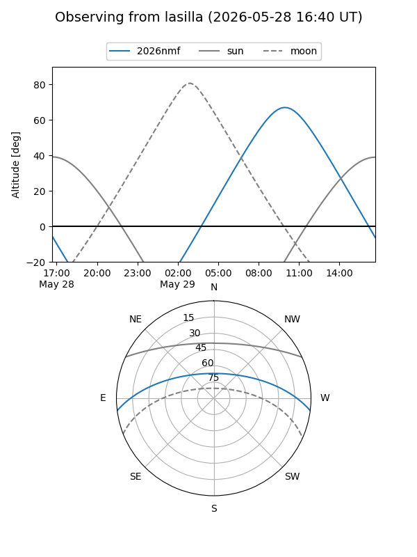
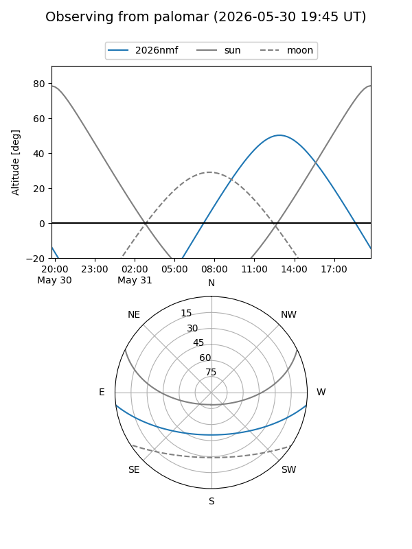
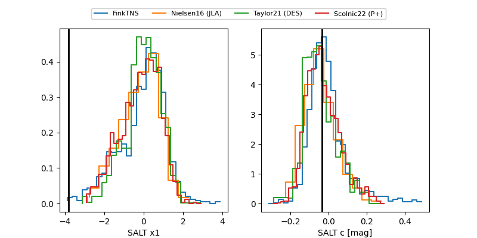

2026nmf
Target 2026nmf at 2026-05-26 00:13
Aliases and brokers:
lsst-FINK: link
lsst-Lasair: link
lsst-ALeRCE: link
ztf-FINK: link
ztf-Lasair: link
ztf-ALeRCE: link
TNS: link
YSE: link
alt names
ZTF26aaylnsw (ztf,fink_ztf)
2026nmf (tns,yse)
ATLAS26ghj (atlas)
Coordinates:
equatorial (ra, dec) = 325.2376,-6.46458
equatorial (HMS+DMS) = 21:40:57.02,-06:27:52.50
galactic (l, b) = (48.5496,-40.34546)
Flags:
TNS confirmed: nan
Photometry:
last ztfg=19.37
1 ztfg detections
Lightcurve

Visibility


Additional plots
